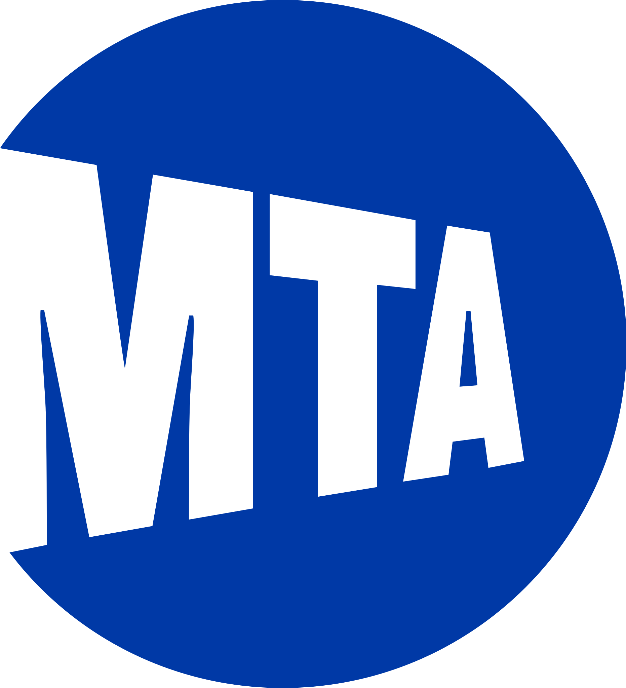
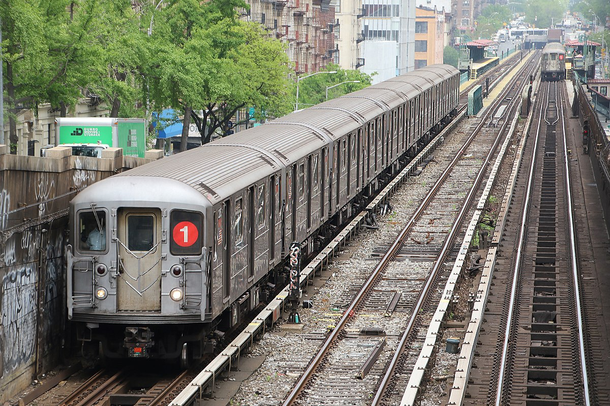

What is Heavy Rail and Why Does It Matter?
Public transportation is the lifeline of tens of millions of Americans every day. Whether it is commuting to work, traveling to school, or simply visiting friends and family, public transportation remains an incredibly important resource nationwide. Nowhere is this more apparent than in major cities throughout the United States, where many individuals are especially reliant on public transit to facilitate their lives, specifically through heavy rail based transportation networks. Heavy rail encompasses a wide range of train transport types, such as cargo transport, national passenger rail (i.e., Amtrak), local commuter rail networks, and more. This project will focus primarily on the effectiveness of passenger rail systems. These systems transport hundreds of thousands, if not millions of people each day, and are oftentimes as essential to the functioning of such cities as their roads and sidewalks. Thus, it is essential that their effectiveness/lack thereof be analyzed to diagnose what problems there may be, and how those problems may be addressed.
|  |
|
|
|
|  | |

|
Which Rail Networks Will This Project Focus on and How Will They Be Analyzed?
The primary focus of my analyses will regarding the heavy rail systems of the transit agencies around the New York City Metropolitan Area. This include the New York City Subway, the Long Island Railroad (LIRR), and Metro-North (all pictured left and above). All three of these agnecies transport millions of students, workers, families, and more daily, and thus hold a tremendous amount of influence on the functioning of the local, national, and international economy as well as the well-being of countless individuals. It is only natural that these agencies be subject to intense and thorough scrutiny and analysis. Through this project, I aim to assess the overall effectiveness/efficiency of these three agencies, compare them against each other, as well as anaylzing public sentiments regarding these agencies. More specifically, this project will aim to address a set of several questions listed below, and more.